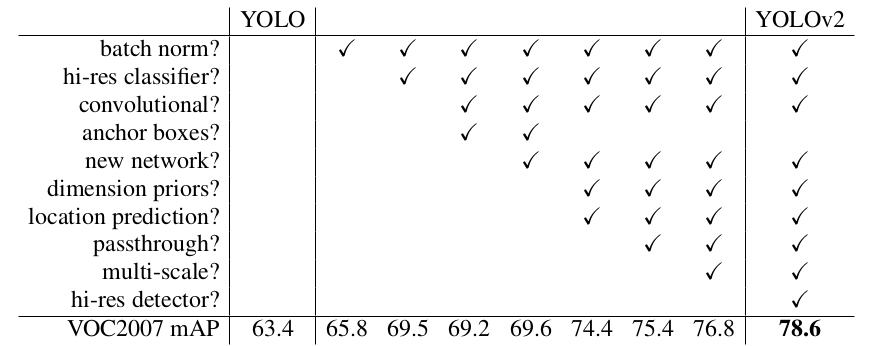
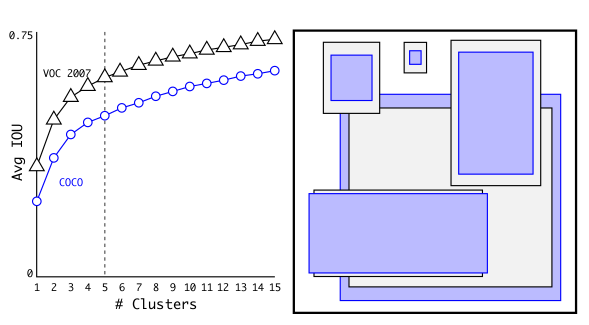
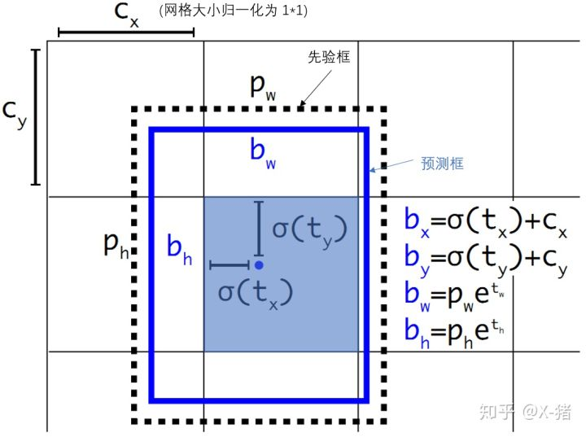
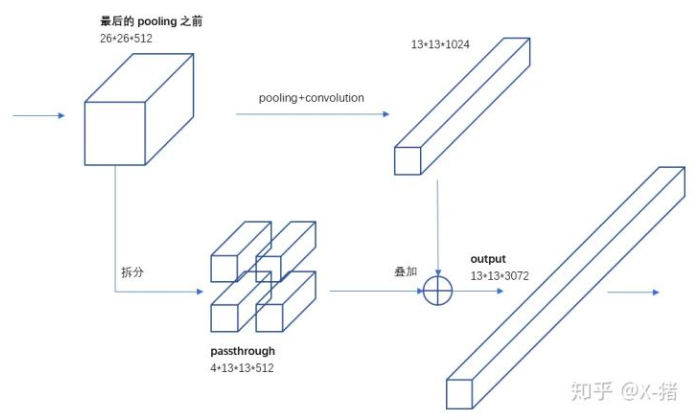
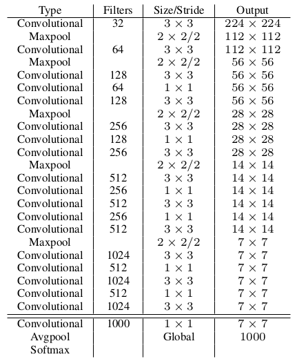
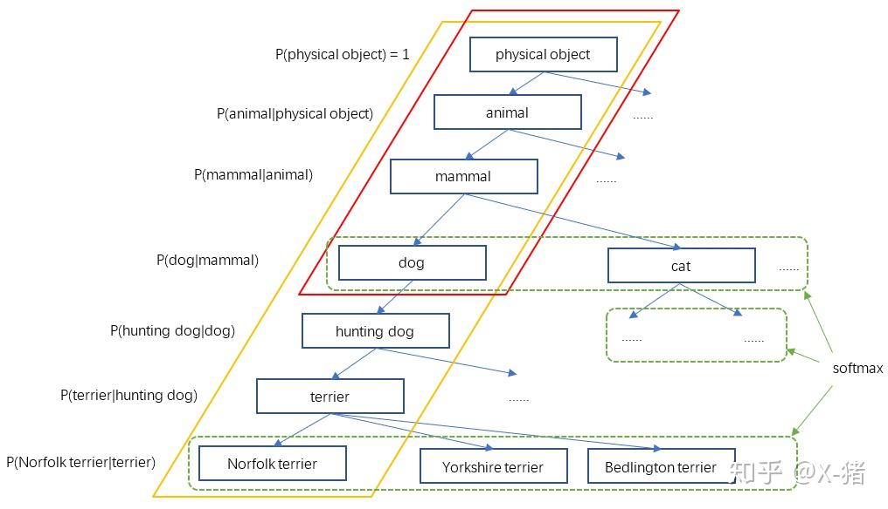

yolo_v2¶
论文地址：YOLO9000: Better, Faster, Stronger
YOLOv2相对于v1版本，在保持处理速度的基础上，从预测更准，速度更快，识别对象更多这三方面进行了改进。识别对象扩展到了9000种不同的对象，称之为YOLO9000。
更准¶
YOLOv1到YOLOv2改进项目列表，列出了各项改进对提升mAP的效果。

Batch Normalization
BN有助于解决反向传播过程中的梯度消失和梯度爆炸问题。YOLOv2对每个卷积层都进行BN，起到了一定正则化的效果，获得了更好的收敛效果。
High Resolution Classifier
图像分类的训练样本很多，而标注了边框用于训练目标检测的样本相比较少，因为标注边框的人工成本比较高。目标检测模型通常使用图像分类样本预训练，提取图像特征。
YOLO2在采用 224*224 图像进行分类模型预训练后，再采用 448*448 的高分辨率样本对分类模型进行微调（10个epoch），使网络特征逐渐适应 448*448 的分辨率。然后再使用 448*448 的检测样本进行训练，缓解了分辨率突然切换造成的影响。
Anchor Boxes
借鉴了Faster RCNN的做法，YOLOv2也尝试采用先验框。在每个grid预先设定一组不同大小和宽高比的边框，来覆盖整个图像的不同位置和多种尺度。
YOLO2移除了全连接层，去掉了一个池化层，使网络卷积层输出具有更高的分辨率。
Dimension Clusters
YOLOv2对训练集中标注的边框进行聚类分析，以寻找尽可能匹配样本的边框尺度。对于常用的欧式距离，大边框会产生更大的误差，所以YOLOv2采用以下公式来计算两个边框之间的“距离”：
\[d(box, centroid) = 1 - IOU(box, centroid)\]注解
\(centroid\) 是聚类时被选作中心的边框，box是其他边框
我们选择 \(k = 5\) 作为边框数量与IOU的折中，使用5个聚类框可达到61 Avg IOU, 相当于9个手工设置的先验框。

Direct location prediction
YOLOv2将预测边框的中心约束在特定的 grid 网格内。
\[\begin{split}b_{x} = \sigma (t_{x}) + c_{x}\\ b_{y} = \sigma (t_{y}) + c_{y}\\ b_{w} = p_{w}e_{t^{w}}\\ b_{h} = p_{h}e_{t^{h}}\\ Pr(object) * IOU(b,object) = \sigma(t_{0})\end{split}\]注解
\(b_{x}, b_{y}, b_{w}, b_{h}\) 是预测边框的中心和宽高。 \(Pr(object) * IOU(b,object)\) 是预测边框的置信度。 \(c_{x}, c_{y}\) 是当前网格左上角到图像左上角的距离，要先将网格大小归一化，即令一个网格的宽=1，高=1。 \(p_{w}, p_{h}\) 是先验框的宽和高。 \(\sigma\) 是sigmoid函数。 \(t_{x}, t_{y}, t_{w}, t_{h}, t_{0}\) 是要学习的参数，分别用于预测边框的中心和宽高，以及置信度。
参考上图，由于sigmoid函数将 \(t_{x}, t_{y}\) 约束在(0,1)范围内，所以根据上面的计算公式，预测边框的蓝色中心点被约束在蓝色背景网格内。约束边框位置使得模型更容易学习，且预测更稳定。
{kind=link}
Fine-Grained Features
目标检测面临的一个问题是图像中的目标有大有小，输入图像经过多层网络提取特征，最后输出的特征图中较小的对象特征已经不明显甚至被忽略掉了。为了更好的检测出一些小对象，YOLOv2引入passthrough层，即在最后一个pooling之前，特征图的大小是26*26*512，将其1拆4 [2]，直接传递到pooling后的特征图，两者叠加到一起作为输出的特征图。

Multi-Scale Training
因为去掉了全连接层，YOLOv2可以输入任何尺寸的图像。因为整个网络下采样倍数是32，作者采用了{320,352,...,608}等10种输入图像的尺寸，这些尺寸的输入图像对应输出的特征图宽和高是{10,11,...19}。训练时每10个batch就随机更换一种尺寸，使网络能够适应各种大小的对象检测。
更快¶
为了进一步提升速度，YOLOv2提出了Darknet-19网络结构，相较于VGG-16，浮点运算量减少到约1/5，以保证更快的运算速度。

- 在ImageNet分类数据上预训练DarkNet-19，此时模型输入为244*244，训练160个epoches
- 调整网络输入为448*448，继续在ImageNet数据上finetune分类模型，训练10个epoches
- 修改DarkNet-19的分类模型为检测模型，移除最后一个卷积层、global avgpooling层以及softmax层，并且新增了三个 3*3*1024卷积层，同时增加了一个passthrough层，最后使用 1*1 卷积层输出预测结果
更强/YOLO9000¶
YOLOv2尝试利用ImageNet大量的分类样本，联合COCO的对象检测数据集一起训练，使得YOLOv2即使没有学过很多对象的检测样本，也能检测出这些对象。
构建WordTree
YOLOv2根据WordNet，将ImageNet和COCO中的名词对象一起构建了一个WordTree。

WordTree如何表达对象的类别
一个WordTree对应且仅对应一个对象，不过该对象节点到根结点的所有节点概率都是1，体现出对象之间蕴含的关系，而其他节点概率是0。
预测时如何确定一个WordTree所对应的对象
根据训练标签的设置，模型学习的是各节点的条件概率，既然各节点预测的是条件概率，那么一个节点的绝对概率就是它到根节点路径上所有条件概率的乘积。
\[\begin{split}Pr(Norflok\ terrier) = Pr(Norfolk\ terrier|terrier)\\ * Pr(terrier|hunting\ dog)\\ *...*\\ * Pr(mammal|animal)\\ * Pr(animal|physical\ object)\\ * Pr(physical\ object)\end{split}\]对于分类计算， \(Pr(physical\ object) = 1\)
实际中为了计算简便，采用一种比较贪婪的算法。从根结点开始向下遍历，对每一个节点，在它子节点中，选择概率最大的那个（一个节点下面的所有子节点是互斥的），一直向下遍历直到某个节点的子节点概率低于设定的阈值（意味着很难确定它的下一层对象到底是哪个），或达到叶子节点，那么该节点就是该WordTree对应的对象。
分类和检测联合训练
YOLO9000依然采用YOLOv2的网络结构，先验框减少到3个，输出是13*13*3*(4+1+9418)。
对于检测样本，其分类误差只包含该标签节点以及到根节点的所有节点的误差。
对于分类样本，只计算分类误差。YOLO9000总共会输出13*13*3=507个预测框（预测对象），计算它们对样本标签的预测概率，选择概率最大的那个框负责预测该样本的对象，即计算其WrodTree的误差。